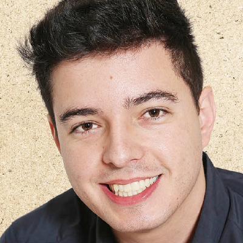

Wilson Rodolfo de Souza

Solteiro, brasileiro, 24 anos
Rua José Alvim, 72, Apt.:02, Centro - Atibaia - SP
Telefone: (35) 9 9151-3191
/ E-mail: wilsonrodolfo@gec.inatel.br
FORMAÇÃO
- INATEL- Instituto Nacional de Telecomunicações, Pós graduação em Desenvolvimento de Aplicações para Dispositivos
Móveis e Cloud Computing.
Conclusão: Dez/2018.
- INATEL- Instituto Nacional de Telecomunicações, Engenharia da Computação.
Conclusão: Jul/2016.
- CEP - Centro de Educação Profissional Tancredo Neves, Técnico em Eletrônica Industrial.
Conclusão: Jun/2012.
EXPERIÊNCIA PROFISSIONAL
- Jan 2016 - Atual – Treetech Sistemas Digitais
- Cargo: Engenheiro de Computação
Principais atividades: Desenvolvimento de aplicações utilizando C++ orientado
a objeto rodando em Linux Embarcado.
- Jul 2014 - Jul 2016 – Centro de Educação Profissional "Tancredo Neves"
- Cargo: Professor de Microcontroladores
Principais atividades: Lecionar teoria e prática de Linguagem C e Microcontroladores.
- Out 2012 - Dez 2013 – GT Projetos
- Cargo: Técnico Eletrônica
Principais atividades: Elaboração de Projetos, montagem e testes de circuitos eletrônicos.
- Jun 2008 - Abril 2011 – Leandro’s Calçados
- Cargo: Administrativo
Principais atividades: Administração, compras e atendimento ao publico.
QUALIFICAÇÕES E ATIVIDADES COMPLEMENTARES
- Inglês – Intermediário.
- Linguagens de programação: Linguagem C/C++, Java, C# e SQL.
- Softwares Técnicos: Altium Designer, Proteus, Eclipse, CodeWarrior, LPCXpresso, MySQL WorkBench, Pic C Compiler,
Dev C++, ISE Design Suite, Cisco Packet Tracer, CodeBlocks, Automation Studio, Visual Studio.
- Banco de dados: MySQL, PostgreSQL e SQLite.
- Treinamento Linux Embarcado. - CH:(24 horas)(2017)
- Treinamento FreeRTOS. - CH:(24 horas)(2017)
- Treinamento Linux Device Drivers. - CH:(24 horas)(2016)
- Curso de Linguagem de Descrição de Hardware (Verilog) e Design de Circuitos Eletrônicos. - CH:(40 horas)(2015)
- Curso de Desenvolvimento Android - CH: (4 horas)(2015)
INFORMAÇÕES ADICIONAIS
-
Participação na FETIN – Feira Tecnológica do Inatel
- uCLP – (CLP com Linux embarcado, comunicação Wi-Fi e custo reduzido) - 2013
-
Participação na FECEP – Feira de Eletrônica, Informática e Administração do CEP
- AmpliCaixaTrivolts – (Som Automotivo e Residencial) – 2012